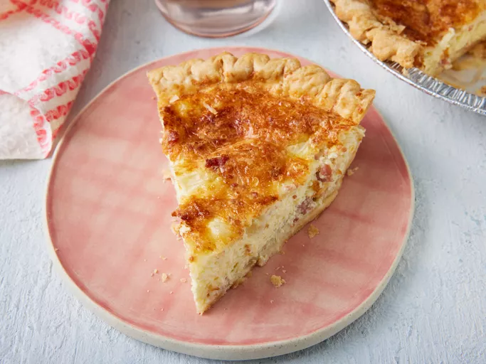

Bacon and cheese Quiche

Description
Prep Time:
10 mins
Cook Time:
50 mins
Total Time:
1 hr
Servings:
6
Perfect pancakes are easier to make than you think. This pancake recipe
produces thick, fluffy, and all-around delicious pancakes with just a few
ingredients that are probably already in your kitchen (and it's so much better
than the boxed stuff).
Ingredients
1 (9 inch) deep dish frozen pie crust
1 (3 ounce) can bacon bits
½ cup chopped onion
5 ounces shredded Swiss cheese
3 ounces grated Parmesan cheese
4 eggs, lightly beaten
1 cup half-and-half cream
Steps
- Preheat the oven to 400 degrees F (200 degrees C).
- Place unthawed pie crust in a pie pan on a baking sheet. Mix bacon, chopped
onion, and both cheeses in a medium bowl. Pour this mixture into the crust.
- Mix eggs and half and half in a bowl until blended; pour the egg mixture over the
cheese mixture.
- Bake in preheated oven for 15 minutes. Reduce heat to 350 degrees F (175
degrees C) and bake until the top of the quiche begins to turn golden brown, an
additional 35 minutes.